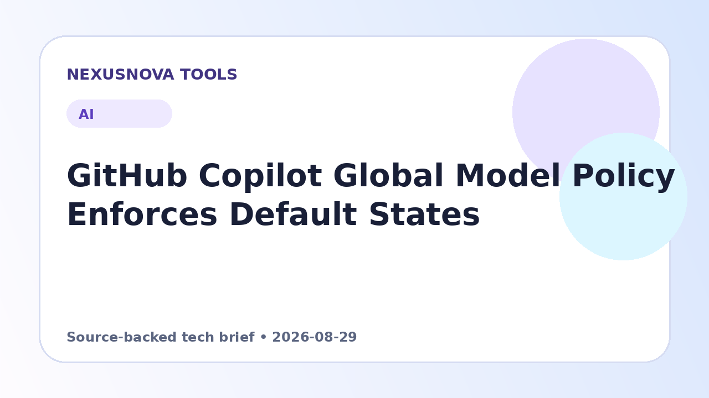

GitHub Copilot Global Model Policy Enforces Default States
GitHub has launched general availability of its global model policy for Copilot Business and Enterprise, standardizing how previously unconfigured and newly available models inherit default access rules.
Published 2026-08-29 • Re-reviewed against GitHub's primary source on 2026-09-05 • NexusNova Editorial Team

Understanding the policy enforcement rollout
GitHub began gradually rolling out enforcement of the global model policy on August 26, 2026, with the rollout scheduled to complete by September 1. The policy applies to GitHub Copilot Business and Copilot Enterprise and determines how previously unconfigured and newly introduced generally available models inherit an enterprise's default model-availability setting.
Under the updated structure, a model that has not been explicitly configured by an administrator can move to a dynamic state called Delegate to default policy. If the global default is enabled, which GitHub says is the default configuration, applicable models become available to users. Administrators can change the default later, and models in the delegated state follow that change.
Exclusions and model-management states
GitHub excludes open-weight models, such as DeepSeek and Kimi K2, and models outside GitHub's standard data-retention agreement, such as Fable 5, from default enablement. Those models remain disabled unless an administrator makes an explicit choice.
GitHub describes four possible states for a model: explicitly Enabled, explicitly Disabled, Delegated to enterprise teams/apps or organizations, or Delegated to default policy. Existing explicit administrator choices are preserved rather than overwritten by the rollout.
What GitHub is considering next
GitHub is collecting feedback on whether the delegated default state should remain part of the management model. One option under evaluation is requiring an explicit administrator decision for each model instead of allowing access to follow an inherited default automatically.
Next steps — GitHub Copilot Global Model Policy
- Review the active global default model policy in your Copilot Business or Enterprise settings.
- Check explicitly enabled or disabled models so existing choices still match compliance and internal-use requirements.
- Identify open-weight or non-standard data-retention models that need an explicit decision before use.
- Revisit settings after GitHub policy changes because inherited access can affect newly available models.